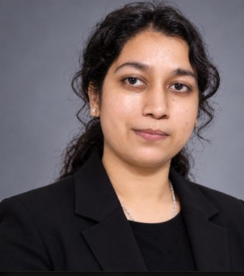

ChandrimaChawdhury
Computer Science Undergraduate | AI/ML & Research Enthusiast
Exploring intelligence through algorithms, engineering, and innovation. Passionate about building intelligent systems that bridge research and real-world applications.
Explore My WorkLet’s Connect
Adamas University · B.Tech Computer Science & EngineeringAbout
I am a Computer Science undergraduate at Adamas University with a strong interest in Artificial Intelligence, Machine Learning, Natural Language Processing, and intelligent systems. My technical journey involves exploring computational approaches, developing practical applications, and integrating software with hardware to solve real-world problems.
I enjoy transforming complex ideas into functional solutions while continuously strengthening my analytical, algorithmic, and research capabilities.
Roles I work in: NLP developer, full-stack developer, robotics & embedded systems builder, aspiring researcher.
Technical expertise
The languages, libraries and hardware I use to build, grouped by what they’re for.
Featured projects
Select a project to read the problem, solution and architecture.
Experience & achievements
Internships and certifications, newest first. Dates appear only where I have confirmed them.
Research interests
Where I want to go deeper.
Education
B.Tech, Computer Science & Engineering
Adamas University · Aug 2024 – Present
SGPA by semester (out of 10)
Additional education
Certifications & activities
Add entries to the DATA object in the script to extend any tab.
Have an idea worth building?
Whether it’s a research collaboration, an innovative project, or a technical opportunity, let’s connect and create something meaningful.